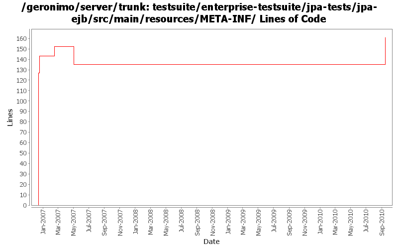

[root]/testsuite/enterprise-testsuite/jpa-tests/jpa-ejb/src/main/resources/META-INF

| Author | Changes | Lines of Code | Lines per Change |
|---|---|---|---|
| Totals | 18 (100.0%) | 218 (100.0%) | 12.1 |
| prasad | 4 (22.2%) | 130 (59.6%) | 32.5 |
| kevan | 3 (16.7%) | 40 (18.3%) | 13.3 |
| gawor | 2 (11.1%) | 30 (13.8%) | 15.0 |
| djencks | 5 (27.8%) | 14 (6.4%) | 2.8 |
| jdillon | 3 (16.7%) | 3 (1.4%) | 1.0 |
| dwoods | 1 (5.6%) | 1 (0.5%) | 1.0 |
GERONIMO-5606: Updated the jpa test case to replicate the problem when persistenceUnitRoot of a PU is wrong
26 lines of code changed in 1 file:
missed updating some jpa10 config and deployer depends
1 lines of code changed in 1 file:
Fix old-style source license headers to use the current source license header format
24 lines of code changed in 2 files:
let maven insert the moduleId info -- less maintenance
4 lines of code changed in 1 file:
update the jpa tests a tiny bit
3 lines of code changed in 2 files:
Std props
3 lines of code changed in 3 files:
Slight clean up of dependencies, check that more direct datasource specification is working
1 lines of code changed in 1 file:
we have ee5 now so the persistence-*-refs can go in ejb-jar.xml
9 lines of code changed in 1 file:
add missing license header
16 lines of code changed in 1 file:
GERONIMO-2657 Pay attention to spec descriptors as well as our proprietary ones. Change the naming schema to use the same constant strings as the spec. Include a test of spec descriptor persistence refs
1 lines of code changed in 1 file:
fixing regression. changes from 486803
4 lines of code changed in 1 file:
* Adding jpa-tests
126 lines of code changed in 3 files: